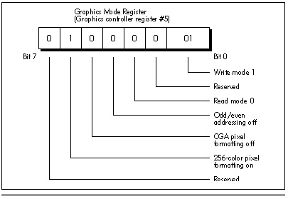

| Previous | Table of Contents | Next |
Does that do it for color selection? Yes and no. For the EGA, we’ve covered the whole of color selection—but not so for the VGA. The VGA can emulate everything we’ve discussed, but actually performs one 4-bit to 8-bit translation (except in 256-color modes, where all 256 colors are simultaneously available), followed by yet another translation, this one 8-bit to 18-bit. What’s more, the VGA has the ability to flip instantly through as many as 16 16-color sets. The VGA’s color selection capabilities, which are supported by another set of BIOS functions, can be used to produce stunning color effects, as we’ll see when we cover them starting in Chapter 33.
EGA registers are not readable. VGA registers are readable. This revelation will not come as news to most of you, but many programmers still insist on setting entire VGA registers even when they’re modifying only selected bits, as if they were programming the EGA. This comes to mind because I recently received a query inquiring why write mode 1 (in which the contents of the latches are copied directly to display memory) didn’t work in Mode X. (I’ll go into Mode X in detail later in this book.) Actually, write mode 1 does work in Mode X; it didn’t work when this particular correspondent enabled it because he did so by writing the value 01H to the Graphics Mode register. As it happens, the write mode field is only one of several fields in that register, as shown in Figure 29.4. In 256-color modes, one of the other fields—bit 6, which enables 256-color pixel formatting—is not 0, and setting it to 0 messes up the screen quite thoroughly.
The correct way to set a field within a VGA register is, of course, to read the register, mask off the desired field, insert the desired setting, and write the result back to the register. In the case of setting the VGA to write mode 1, do this:
mov dx,3ceh ;Graphics controller index mov al,5 ;Graphics mode reg index out dx,al ;point GC index to G_MODE inc dx ;Graphics controller data in al,dx ;get current mode setting and al,not 3 ;mask off write mode field or al,1 ;set write mode field to 1 out dx,al ;set write mode 1
This approach is more of a nuisance than simply setting the whole register, but it’s safer. It’s also slower; for cases where you must set a field repeatedly, it might be worthwhile to read and mask the register once at the start, and save it in a variable, so that the value is readily available in memory and need not be repeatedly read from the port. This approach is especially attractive because INs are much slower than memory accesses on 386 and 486 machines.
Astute readers may wonder why I didn’t put a delay sequence, such as JMP $+2, between the IN and OUT involving the same register. There are, after all, guidelines from IBM, specifying that a certain period should be allowed to elapse before a second access to an I/O port is attempted, because not all devices can respond as rapidly as a 286 or faster CPU can access a port. My answer is that while I can’t guarantee that a delay isn’t needed, I’ve never found a VGA that required one; I suspect that the delay specification has more to do with motherboard chips such as the timer, the interrupt controller, and the like, and I sure hate to waste the delay time if it’s not necessary. However, I’ve never been able to find anyone with the definitive word on whether delays might ever be needed when accessing VGAs, so if you know the gospel truth, or if you know of a VGA/processor combo that does require delays, please let me know by contacting me through the publisher. You’d be doing a favor for a whole generation of graphics programmers who aren’t sure whether they’re skating on thin ice without those legendary delays.

Figure 29.4 Graphics mode register fields.
| Previous | Table of Contents | Next |